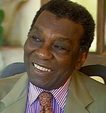

Biografia de Milton Santos
Neste artigo, será tratado a biografia do autor e geógrafo Milton Santos.
Quem foi Milton Santos ?
Milton Almeida dos Santos, conhecido apenas como Milton Santos, foi um reconhecido geógrafo brasileiro. O intelectual nasceu em Brotas de Macaúbas (Bahia) no dia 3 de maio de 1926.Faleceu vítima de câncer de próstata no dia 24 de junho de 2001.
O pensador foi formado em direito, mas sempre lecionou geografia nas escolas de ensino médio da Bahia. Assim, em 1958, concluiu um doutorado em geografia, na Universidade de Strasbourg, França.
A carreira acadêmica do intelectual
Esteve sempre envolvido com a política; em 1960 participou do governo, mas em 1964 foi preso em decorrência do golpe militar. Após sua saída da prisão trabalhou em universidades da França, Canadá, Estados Unidos, Venezuela e Tanzânia, na África.
Retornou ao Brasil em 1977, pois queria que seu segundo filho nascesse na Bahia. Em 1978, iniciou sua carreira na Universidade de São Paulo, lecionando na Faculdade de Arquitetura e Urbanismo e posteriormente na Universidade Federal do Rio de Janeiro. Ao voltar para São Paulo tornou-se professor da Faculdade de Geografia da USP. Recebeu títulos de Doutor Honoris Causa nas universidades de Toulouse, Buenos Aires, Madri e Barcelona e outros no Brasil, destacando o de Professor Emérito da Faculdade de Filosofia, Letras e Ciências Humanas da USP.
A vida fora da academia
O geógrafo escreveu para uma série de jornais, foi correspondente e Diretor da Imprensa Oficial da Bahia (entre 1959-1961).
Ocupou alguns cargos políticos importantes como chefe da Casa Civil da Presidência da República no Estado da Bahia (1961), Presidente da Fundação Comissão de Planejamento Econômico da Bahia (1962-1964) e membro da comissão especial de Constituição Estadual (onde ficou responsável por redigir um ante-projeto em 1989).
Foi consultor das Nações Unidas, da UNESCO, da OIT e da OEA e atuou como consultor nacional para o desenvolvimento urbano, além de ter sido ativista nas questões do ensino no país. Prestou também consultoria para governos externos como Argélia e Guiné-Bissau.
Livros de Milton Santos publicados
- Por uma geografia nova (1978)
- Pobreza urbana (1978)
- O espaço dividido (1979)
- Espaço e método (1985)
- O espaço do cidadão (1987)
- A urbanização brasileira (1993)
- Técnica, espaço, tempo (1994)
- A natureza do espaço (1996)
- Por uma outra globalização (2000)
- O Brasil: território e sociedade no início do século XXI (2001)